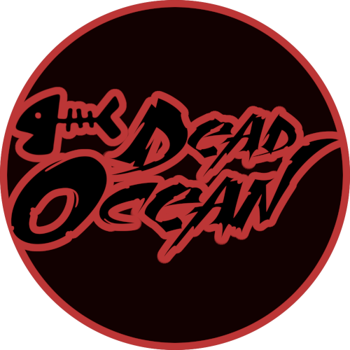

Acerca de SupraChat
SupraChat es un chat IRC gratuito y sin registro obligatorio donde puedes entrar a platicar con personas de todo el mundo sobre cualquier cosa que te imagines.
Qui√©n sabe, quizá el amor que tanto has buscado te está esperando aqu√≠ ü•∞, no lo sabrás si no entras a chatear justo ahora üëÄ.
Conoce a nuestro equipo

DeadOcean
Administrador
admin@suprachat.net
Gusy
Operadora
gusy@suprachat.net
Rey
Operador
rey@suprachat.net
Siéntete con la confianza de contactar a cualquiera de ellos si tienes algun problema o inquietud acerca del chat, ellos harán todo lo que puedan para ayudarte!